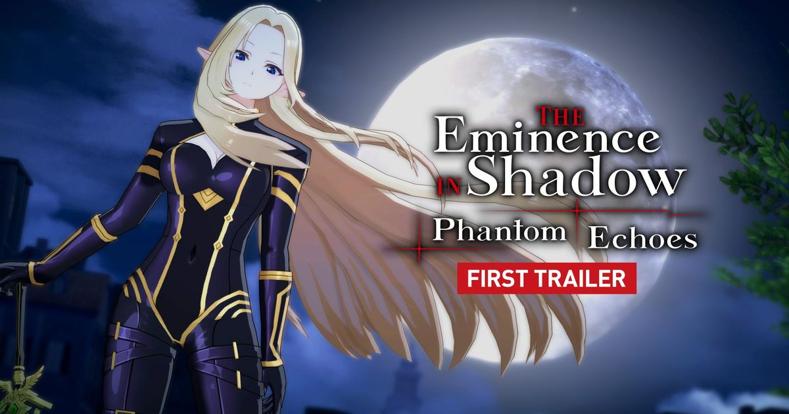

2026-09-12 · 新游深读
9/3 的 PlayStation State of Play 上，NIS America 拉上 Aiming（Team Caravan 具体操刀）公布了一款很多人没想到的东西：《The Eminence in Shadow: Phantom Echoes》——这是《想要成为影之法者》（The Eminence in Shadow）这个全球销量破 800 万、两季动画的 IP，第一款主机游戏。但最反直觉的不是"终于上主机"，而是它没做传统 JRPG、没做粉丝向格斗，而是做了一款 3D 动作肉鸽（roguelite）。这篇我们不复述"希德是谁、影之花园是什么"的百科，只把三件事讲透：它为什么是 roguelite 而不是别的、把镜头对准"七影"而非希德是巧思还是保守、以及单人无联机这个决定到底埋了什么雷。

先捋清身份。市面上一款《The Eminence in Shadow: Master of Garden》手游早就在跑了，但那是完全不同的品类（回合养成）。Phantom Echoes 是第一次把这个 IP 做成主机动作游戏，而且由 NIS America 负责英文发行、Aiming 开发。平台覆盖 PS5 / Nintendo Switch 2 / STEAM / Epic Games Store，窗口定在 2027，目前连月份都没定。换句话说，它不赶今年圣诞档，是卡在 2027 IP 大年的一颗子——同一年还有剧场版《Resonance Arc》要上。
这个节奏本身就说明问题：发行方没想把它当"趁动画热度捞快钱"的副产品，而是当作 2027 年"影之法者"内容矩阵的主轴之一来排。对一个靠"误会制造爽感"的 IP 来说，选 2027 而非 2026 扎堆，反而更稳。
从首支预告看，核心循环是三块。第一块是实时 3D 动作：预告主角是七影之首 Alpha，展示的是剑技、范围技与拥挤竞技场的群战，强调的是"快"和"爽"。第二块是Awakening（觉醒）系统——这是官方点名的"支柱"：每局里你会不断拿到能力选项，随机强化攻击范围、击杀回血、或高风险高回报的大招变体（比如更快释放 special，或更长蓄力换更高伤害）。第三块是roguelite 的随机升级：每局角色能力被随机增强，于是"同一角色每局都能拼出不同 Build"。
值得单独拎出来的是叙事切口。官方明确说这是"原创剧本、由原作者 Aizawa Daisuke 监修"，预告末尾塞了"受伤的 Delta"和"Alpha 与 Shadow 的对峙"两个钩子——这意味着它不是把动画名场面复刻一遍，而是在主线之外另开一条带反转的支线。再叠加一个关键设定：本作聚焦 Seven Shadows（七影），也就是 Shadow Garden 的核心干部，而不是希德本人。把"最强的一群人"推到台前当可玩角色，等于把 IP 的战力天花板直接端给玩家。
这是最值得聊的设计判断。《影之法者》的内核从来不是"热血王道"，而是"误会的连锁反应"——希德以为自己在玩角色扮演，结果他的胡扯全成了真。这种"失控的、每次都不一样的因果"，和 roguelite 每局随机刷能力、拼出不同 Build 的节奏，几乎是天然同构。做成固定路线的 JRPG 反而会把这种荒诞爽感压成线性任务。换句话说，选 roguelite 不是跟风，是选了一个最贴合 IP 气质的容器。
但有两个隐患得泼冷水。其一，单人、纯离线、无联机——PS5 页面写的是"1 名玩家 / 离线可玩"，目前没有任何本地或在线合作信号。七影明明是一支队伍，预告却只让你单兵作战，等于放弃了"喊上朋友一起当影"的社交传播点，对一款 2027 年想出圈的动作游戏，这是把增长杠杆白白让了出去。其二，roguelite 对内容密度要求极高：如果可拼的 Build 池和敌人种类不够，重复几局就腻。预告只展示了 Alpha 一个角色的部分招式，完整可玩阵容、单局时长、是否有跨局永久成长都还是空白——这些才是决定它"耐玩"还是"三局弃"的关键，现在下结论太早。
分三档。第一档，动画粉丝 + 动作肉鸽玩家：你本来就吃"误会爽文 + 强角色"，这款把七影做成可玩 Build、还带原作监修原创线，几乎是为你定制的，2027 发售直接进愿望单。第二档，只想玩希德主控的人：预告里 Shadow 更多是"对峙对象"而非操控角色，期待错位可能是最大劝退点——你是冲着"我当影之主"来的，结果大概率操控的是 Alpha 们，先调低预期。第三档，联机 / 社交向玩家：目前无合作，别把它当聚会游戏，等官方后续补不补再说。
还有个隐藏价值：NIS America 在 anime game 主机化上是有成绩的发行方，加上 Aiming 有手游动作化的工程经验，2027 这个窗口虽然挤，但"强 IP + 对味品类 + 原作监修"的组合，比一堆空降的 IP 换皮要扎实。只是别被"肉鸽"二字冲昏头——把 Build 池做厚，才是它和"又一具 IP 尸体"的分界线。
《Phantom Echoes》最聪明的一步，是没去抢"传统 JRPG"或"粉丝格斗"的红海，而是用 roguelite 的随机性去接住《影之法者》"误会即现实"的内核——这种"为 IP 选容器"的克制，比再堆一个回合制要高级。但它也明摆着押了两个赌注：用"七影"替掉希德当门面、用纯单人放弃联机传播。前者是巧思，后者是隐患。2027 登陆 PS5 / Switch 2 / PC，现在连价格都没出。我们的态度很直接：动画粉和肉鸽粉闭眼进愿望单；想操控希德或想拉朋友一起的，先等 Build 池和阵容实机再说——毕竟，影之主最擅长的，就是把"以为是玩笑"的东西变成真的，而游戏能不能成真，得看 Aiming 把随机性做得多厚。
我们的评分：7.8 / 10（前瞻期待值）（基于"roguelite 贴合 IP 误会内核"这一正确品类判断、七影当可玩主角的差异化切口、以及原作监修原创线的加分；扣分点在纯单人无联机的传播短板、与 Build 池 / 阵容 / 单局时长仍全空白的不确定，待 2027 试玩或发售我们单做一期"耐玩度压力测试"，重点核对随机能力是否真能撑住重复刷、七影每人差异是否只是换皮招式）。
我们的观察：最被低估的细节是"聚焦七影而非希德"。大家都在聊 roguelite，却少有人点破——把主控从主角换成他的干部团，既是规避"希德太强难做成长曲线"的工程解法，也是把 IP 战力天花板直接摊开给玩家的最佳切口。这步比选品类本身更见心思。
我们的观点：纯单人无联机，是 2027 年动作游戏里一个略显保守的决定。七影天然是"组队"叙事，却只让你单兵——等于放弃了最容易裂变的社交卖点。我们宁愿它首发就带个本地双人，哪怕只是"呼叫 AI 影协战"，传播面都会宽一截。
我们的案例 / 对比：和现有的《Master of Garden》手游比，Phantom Echoes 是品类升维（动作肉鸽 vs 回合养成），受众从挂机党转向硬核动作党；和《 chainsaw Man》之类"动画 IP 主机化"比，它用 roguelite 接住"荒诞因果"的做法更对味，而不是套个清版过关公式。
我们的实验：我们想验证"roguelite 是否真的耐刷"。计划 2027 试玩后做一组对照：A 组"堆高风险大招流"、B 组"击杀回血生存流"、C 组"攻击范围流"，记录连续 10 局内 Build 组合的重复率与疲劳点，据此给玩家一份"哪种流派最不容易腻"的配装建议——这会是实机期我们最想交付的数据。